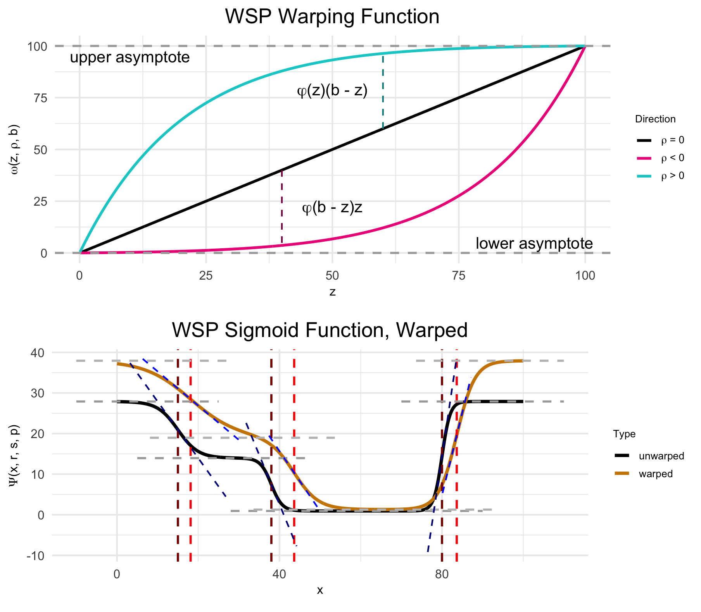
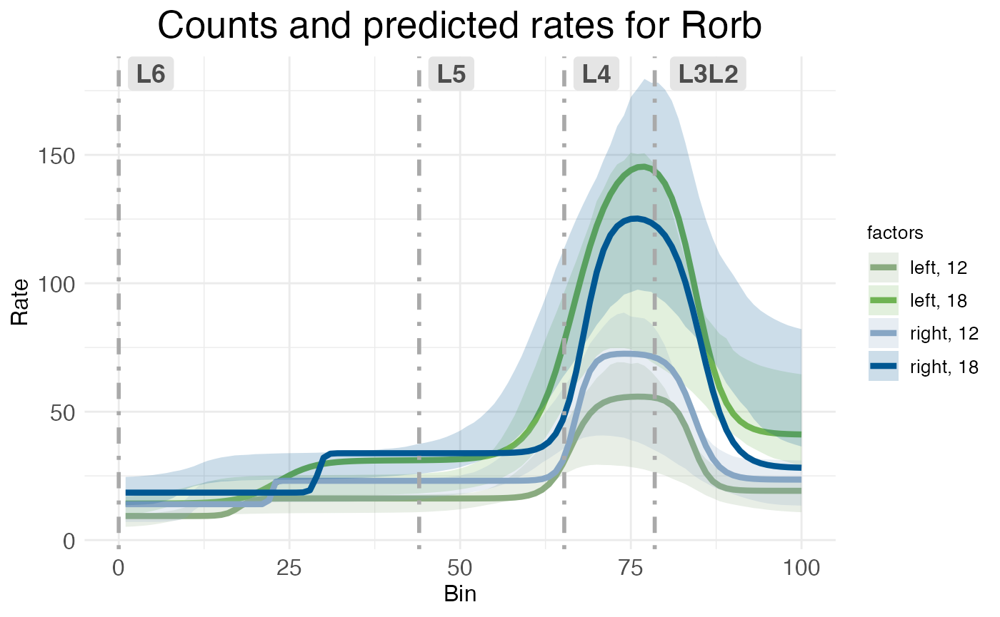
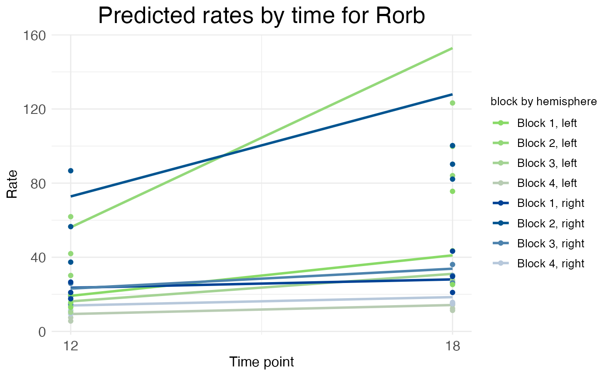

RORB along the cortical laminar axis
Michael Barkasi
2025-11-21
tutorial_corticallaminar.RmdIntroduction
The gene RORB plays a key role in the development of somatosensory cortex in rodents. RORB expression leads axons from thalamic neurons to innervate cortical layer 4. These thalamocortical projections organize into discrete “barrel” formations, each barrel containing the inputs from a single whisker.
While it’s sometimes assumed that there are no major differences in barrel formations between the left and right hemispheres (i.e., no “laterality”), over the years there have been several histological studies suggesting age-dependent hemispheric differences. Given the established role of RORB in barrel formation, one might want to test for age-dependent laterality in RORB expression.
Labeling the ROI
This tutorial uses data collected from four male wild-type mice to test for age effects on laterality in RORB expression. The mice are split between two ages: postnatal day 12 (P12) and postnatal day 18 (P18). The starting point was raw, non-normalized mRNA counts from the cells within the primary somatosensory cortex (S1), both left and right hemispheres. Before using any functions from wispack, S1 was identified in each sample by manually fitting the entire slice to the CCFv3.

Left: Example horizontal slice as reconstructed from MERFISH data. Red highlight indicates the right primary somatosensory cortex. Right: The right somatosensory cortex, with RORB molecules in red and laminar and columnar axes labeled.
Coordinate transform
As wisp can only model one dimension of spatial variation (at least, as-of the writing of this demo for v1.1), this axis must be identified and the RORB molecule coordinates must be transformed into it. As the primary concern is with how RORB is distributed across cortical layers, the laminar axis is the obvious candidate. Coordinate transformation into an axis of interest must be done outside of wispack. For this case, a custom coordinate transformation, described in this preprint (and available as code via the function cortical_coordinate_transform()), was written.

Visualization of coordinate transform steps from initial CCFv3 registration to laminar and columnar axes.
Note that the laminar axis is encoded as y, with 0 being the bottom of L6b, 100 the top of L2/3. The columnar axis is encoded as x, with 0 being the most posterior point, 100 the most anterior point. L1 was removed from the analysis, as it contains very few cells.
Data format
Wispack contains a csv file with the results of this coordinate transformation applied to the raw data. To start, load this data and print its first few rows:
countdata <- read.csv(
system.file(
"extdata",
"S1_laminar_countdata_demo.csv",
package = "wispack"
)
)
print(head(countdata))## count bin context gene mouse hemisphere age
## 1 0 100 cortex Bcl11b 1 left 12
## 2 0 99 cortex Bcl11b 1 left 12
## 3 0 93 cortex Bcl11b 1 left 12
## 4 0 98 cortex Bcl11b 1 left 12
## 5 0 94 cortex Bcl11b 1 left 12
## 6 0 94 cortex Bcl11b 1 left 12As can be seen, the imported data has the columns: count, bin, context, gene, mouse, hemisphere, age. Although the focus is on RORB, these first few rows show that there are other genes in the data as well. How many?
## Number of genes: 6Which genes?
## Gene names: Bcl11b, Fezf2, Satb2, Nxph3, Cux2, RorbJust as RORB is known to be localized to L4, the other genes are also known to be localized to specific layers.
| Abbreviation | Name | Layer |
|---|---|---|
| BCL11B, CTIP2 | B-cell CLL/lymphoma 11b | 5/6 |
| FEZF2 | FEZ Family Zinc Finger 2 | 5 |
| SATB2 | SATB Homeobox 2 | 2/3 |
| NXPH3 | Neurexophilin 3 | 6 |
| CUX2 | Cut like homeobox 2 | 2/3/4 |
| RORB | Retinoic acid-related orphan receptor beta | 4 |
So, the modeling results can be compared to known biology in all cases. To facilitate this comparison, we can load the layer boundaries gotten from the CCFv3 registration for use later. Note that these boundaries are only used for this comparison, not to fit the model.
layer.boundary.bins <- read.csv(
system.file(
"extdata",
"S1_layer_boundary_bins.csv",
package = "wispack"
)
)Each row in the data frame represents a cell from the left or right S1 region of one of the four mice. Each cell is represented in multiple rows, one row per gene. Hence, the number of cells can be found by dividing the number of rows by the number of genes.
## Number of cells: 54116The count column thus gives the number of molecules of the RNA species listed in the gene column, found in the cell represented by a given row. Each cell, of course, comes from a specific mouse and brain hemisphere, information given in the correspondingly named columns. The age column gives the age of the mouse.
This leaves two columns to explain: context and bin. “Context” refers to the biological context of the cell. In this case, all the cells are simply labeled as “cortex”, thus making context a dummy variable. An obvious use of the context variable would be to label the type of each cell, e.g., glutamatergic vs. GABAergic neurons (see Modeling celltypes).
The bin column gives the position of the cell along the axis of interest (in this case, the laminar axis), in units of “bins”. Any position coordinates could be used, including ones with non-integer values such as microns. However, we have binned the position coordinates into 100 (roughly) equal-width bins to allow for bootstrapping (see Customizing statistical analyses).
Effects structure
The goal is to test for interacting effects of age and laterality, with mouse as a random-effect grouping factor. A linear model from the well-known R package lme4 with the appropriate effects structure could be gotten with the following call:
model <- lme4::lmer(
count ~ age * hemisphere + (age * hemisphere|mouse),
data = countdata
)The problem with this linear model is that it makes no use of the bin variable and thus loses all spatial information. A second problem is that the model makes no use of the gene variable, although this problem could be addressed by subsetting countdata to just a single gene of interest. (Gene should not be treated as another fixed-effect factor along with age and hemisphere, as there’s no reason to think age or hemisphere have any effect independent of RNA species.) Nevertheless, this model shows the basic effects structure wisp aims to capture.
A wisp captures this effects structure without discarding spatial information, and while segregating counts by gene. Unlike a mixed-effects linear model from the lme4 package, there is no model formula to specify in wispack. Instead of using a syntactic description (a formula), the effects structure in wispack is set semantically, i.e., by specifying which variables in the data frame correspond to which roles in the model. The roles are:
- count: either a non-negative integer giving the number of RNA molecules of a given species in a given cell, or a non-negative real number giving normalized or log-transformed expression values.
- bin: the position of the cell along the axis of interest (whether or not the actual unit is “bin”).
- context: the biological context of the cell, typically a celltype label.
- species: the RNA species (gene) being modeled.
- ran: the random-effect grouping factor, typically a sample or animal ID.
- timeseries: a fixed-effects factor to treat as a time series (if any), typically developmental or experimental time points.
- fixedeffects: a vector of fixed-effect factors, typically biological or experimental conditions.
Note that wisps are intended to model Poisson processes, and so both the underlying optimization and statistical parameter estimation assume the count variable is a Poisson-distributed integer. However, the code will accept and attempt to fit normalized and log-transformed real-valued expression data as well (as shown here), albeit with care needed in interpreting the results.
The timeseries variable is optional. If none is provided, wisp will not treat any fixed effects as time series. However, if a variable is flagged as a time series, wisp will model it as a discrete additive effect.
In the data frame loaded above, the count, bin, and context columns match the names of the roles to which they correspond. Wispack will find those columns automatically. However, the species and ran roles have different names in the data frame, and thus wispack needs to know which data columns carry these variables. While wispack has no default names for fixed effects, if no fixed effects are specified, all columns not identified as one of the other roles will be treated as fixed effects. Unless flagged as a time series, all fixed effects must have at most two levels.
# Specify variables for wisp
data.variables <- list(
species = "gene",
ran = "mouse",
timeseries = "age"
)As the data contains only two ages, it’s not technically necessary to flag the age column as a time series. However, doing so triggers the wisp function to make plots showing rate changes over time.
It would be redundant, but all roles would be specified as follows:
# Specify all variables for wisp
data.variables <- list(
count = "count",
bin = "bin",
context = "context",
species = "gene",
ran = "mouse",
timeseries = "age",
fixedeffects = c("hemisphere", "age")
)Model parameters
In wisp, a semantic specification of the variable roles suffices because, with respect to those roles, all wisp models have the same effects structure. This effects structure is defined over a parameterization of the spatial distribution of RNA molecules. Wisp models describe the distribution of RNA molecules along a one-dimensional axis (the bin variable) as a log-transformed rate that is constant across space, except for transition points where the rate changes with a slope given by a logistic function. Within this spatial parameterization, fixed effects from fixed-effect factors or their interactions are simple linear effects, being multiplicative on rates and additive on transition points and slopes. The multiplicative effects on rate are log-fold changes, and so mesh nicely with standard practice.

(Top) The logistic function, used to model a single change point in gene expression. (Bottom) The wisp poly-sigmoid function, built from three logistic components, representing three change points.
Random effects from the random-effect grouping factor are a nonlinear warping of the three spatial parameters.

(Top) The warping function used to represent random effects, e.g., variation due to differences between individual animals or due to measurement noise. (Bottom) The wisp poly-sigmoid with warping function applied.
Fitting the model
Thus, the goal of fitting a wisp model to spatial transcriptomics data is to estimate, for each gene:
- The number of transition points.
- The spatial parameters (expression rates, transition-point locations, and transition-point slopes) in the reference condition.
- The linear effects of fixed-effect factors and their interactions on the spatial parameters.
- The nonlinear warping effects of the random-effect grouping factor on spatial parameters.
Although wispack includes many settings for fine-tuning the modeling process, fitting a wisp model and estimating its parameters is done with a single R function, wisp(). This function only needs one argument, the data to be modeled (count.data). If, as above, the variable roles are filled by data columns with with different names, then the variables (data.variables) must be provided via another argument.
The following code fits a wisp model to the data loaded above, with verbose output (scroll output box to view). Plots are suppressed, as by default many are generated in the fitting process. As noted above, layer boundaries are provided to the model, but are used only in making plots so that the model fit and parameter estimates can be compared to the laminar boundaries estimated by the CCFv3 registration.
# Set random seed for reproducibility
set.seed(123)
# Load wispack
library(wispack, quietly = TRUE)
# Fit model
model <- wisp(
count.data = countdata,
variables = data.variables,
plot.settings = list(
print.plots = FALSE,
dim.bounds = colMeans(layer.boundary.bins)
),
verbose = TRUE,
)##
##
## Parsing data and settings for wisp model
## ----------------------------------------
##
## Model settings:
## buffer_factor: 0.05
## ctol: 1e-06
## max_penalty_at_distance_factor: 0.01
## LROcutoff: 2
## LROwindow_factor: 1.25
## rise_threshold_factor: 0.8
## max_evals: 1000
## rng_seed: 42
## warp_precision: 1e-07
## round_none: TRUE
## inf_warp: 450359962.73705
##
## Plot settings:
## print.plots: FALSE
## dim.bounds: 78.5, 65.25, 44, 0
## pred.type: pred
## count.type: count
## splitting_factor:
## CI_style: TRUE
## label_size: 5.5
## title_size: 20
## axis_size: 12
## legend_size: 10
## count_size: 1.5
## count_jitter: 0.5
## count.alpha.ran: 0.25
## count.alpha.none: 0.25
## pred.alpha.ran: 0.9
## pred.alpha.none: 1
##
## MCMC settings:
## MCMC.burnin: 100
## MCMC.steps: 1000
## MCMC.step.size: 0.5
## MCMC.prior: 1
## MCMC.neighbor.filter: 1
##
## Variable dictionary:
## count: count
## bin: bin
## context: context
## species: gene
## ran: mouse
## timeseries: age
## fixedeffects: hemisphere, age
##
## Parsed data (head only):
## ------------------------------
## count bin context species ran hemisphere timeseries
## 1 0 100 cortex Bcl11b 1 left 12
## 2 0 99 cortex Bcl11b 1 left 12
## 3 0 93 cortex Bcl11b 1 left 12
## 4 0 98 cortex Bcl11b 1 left 12
## 5 0 94 cortex Bcl11b 1 left 12
## 6 0 94 cortex Bcl11b 1 left 12
## ----
##
## Initializing Cpp (wspc) model
## ----------------------------------------
##
## Infinity handling:
## machine epsilon: (eps_): 2.22045e-16
## pseudo-infinity (inf_): 1e+100
## warp_precision: 1e-07
## implied pseudo-infinity for unbounded warp (inf_warp): 4.5036e+08
##
## Extracting variables and data information:
## Found max bin: 100.000000
## Fixed effects:
## "hemisphere" "timeseries"
## Ref levels:
## "left" "12"
## Time series detected:
## "12" "18"
## Created treatment levels:
## "ref" "right" "18" "right18"
## Context grouping levels:
## "cortex"
## Species grouping levels:
## "Bcl11b" "Cux2" "Fezf2" "Nxph3" "Rorb" "Satb2"
## Random-effect grouping levels:
## "none" "1" "2" "3" "4"
## Total rows in summed count data table: 12000
## Number of rows with unique model components: 120
##
## Creating summed-count data columns and weight matrix:
## Random level 0, 1/5 complete
## Random level 1, 2/5 complete
## Random level 2, 3/5 complete
## Random level 3, 4/5 complete
## Random level 4, 5/5 complete
##
## Making extrapolation pool:
## row: 480/2400
## row: 960/2400
## row: 1440/2400
## row: 1920/2400
## row: 2400/2400
##
## Making initial parameter estimates:
## Extrapolated 'none' rows
## Took log of observed counts
## Estimated gamma dispersion of raw counts
## Estimated change points
## Found average log counts for each context-species combination
## Estimated initial parameters for fixed-effect treatments
## Built initial beta (ref and fixed-effects) matrices
## Initialized random-effect warping factors
## Made and mapped parameter vector
## Number of parameters: 300
## Constructed grouping variable IDs
## Size of boundary vector: 1260
##
## Estimating model parameters
## ----------------------------------------
##
## Running MCMC stimulations
## Checking feasibility of provided parameters
## ... no tpoints below buffer
## ... no NAN rates predicted
## ... no negative rates predicted
## Provided parameters are feasible
## Initial boundary distance (want > 0): 0.247647
## Performing initial fit of full data
## Penalized neg_loglik: 11975.6
## step: 1/1100
## step: 110/1100
## step: 220/1100
## step: 330/1100
## step: 440/1100
## step: 550/1100
## step: 660/1100
## step: 770/1100
## step: 880/1100
## step: 990/1100
## All complete!
## Acceptance rate (aim for 0.2-0.3): 0.283432
##
## MCMC simulation complete...
## MCMC run time (total), minutes: 1.199
## MCMC run time (per retained step), seconds: 0.065
## MCMC run time (per step), seconds: 0.065
##
## Setting full-data fit as parameters...
## Checking feasibility of provided parameters
## ... no tpoints below buffer
## ... no NAN rates predicted
## ... no negative rates predicted
## Provided parameters are feasible
## Initial boundary distance (want > 0): 0.164251
##
## Running stats on simulation results
## ----------------------------------------
##
## Grabbing sample results...
## Grabbing parameter values...
## Computing 95% confidence intervals...
## Estimating p-values from resampled parameters...
##
## Recommended resample size for alpha = 0.05, 171 tests
## with bootstrapping/MCMC: 3420
## Actual resample size: 1001
##
## Stat summary (head only):
## ------------------------------
## parameter estimate CI.low CI.high p.value p.value.adj alpha.adj significance
## 1 baseline_cortex_Rt_Bcl11b_Tns/Blk1 3.3874762662 3.2421099305 3.6060658268 NA NA NA
## 2 beta_Rt_cortex_Bcl11b_right_X_Tns/Blk1 -0.0002723492 0.0004694455 0.0009556921 0.001998002 0.02997003 0.0033333333 *
## 3 beta_Rt_cortex_Bcl11b_18_X_Tns/Blk1 0.6059294086 0.4971755126 0.6552261694 0.000000000 0.00000000 0.0002923977 ***
## 4 beta_Rt_cortex_Bcl11b_right18_X_Tns/Blk1 0.0476934492 0.0324878078 0.0563049808 0.000000000 0.00000000 0.0002941176 ***
## 5 baseline_cortex_Rt_Bcl11b_Tns/Blk2 2.2516514786 1.9124303425 2.6135187197 NA NA NA
## 6 beta_Rt_cortex_Bcl11b_right_X_Tns/Blk2 0.1004792278 0.0486139120 0.0951689705 0.000000000 0.00000000 0.0002958580 ***
## ----
##
## Computing 95% CI for predicated values by bin
## ----------------------------------------
##
## Grabbing sample results...
## Computing predicted values for each sampled parameter set...
## Computing 95% CIs...
## Analyzing residuals
## ----------------------------------------
##
## Computing residuals...
## Making masks...
## Making plots and saving stats...
##
## Log-residual summary by grouping variables (head only):
## ------------------------------
## group mean sd variance
## 1 all 0.2387532 0.3908161 0.15273719
## 2 ran_lvl_none 0.2323705 0.3161788 0.09996903
## 3 ran_lvl_1 0.2381996 0.3967808 0.15743503
## 4 ran_lvl_2 0.2130804 0.3931356 0.15455562
## 5 ran_lvl_3 0.2747967 0.4583713 0.21010427
## 6 ran_lvl_4 0.2417013 0.4391963 0.19289335
## ----
##
## Making MCMC walks plots...
## Making effect parameter distribution plots...
## Making rate-count plots...
## Making time series plots...
## Making parameter plots...
## Making parameter plots...
## Making parameter plots...
## Making parameter plots...
## Making parameter plots...
## Making parameter plots...Extracting the results
As can be seen in the print out above, wisp models typically have hundreds (or even thousands) of parameters, which means that they usually lack the kind of brief-yet-informative summary familiar from R packages for linear models. The most flat-footed way to extract desired results is to hunt through the output. The output of wisp() is a list with the following named components:
## model.component.list: character
## count.data.summed: data.frame
## fitted.parameters: numeric
## gamma.dispersion: matrix, array
## param.names: character
## fix: list
## treatment: list
## weight.matrix: matrix, array
## grouping.variables: list
## param.idx0: list
## token.pool: list
## settings: list
## sample.params: matrix, array
## sample.params.MCMC: matrix, array
## diagnostics.MCMC: data.frame
## variables: list
## plot.settings: list
## stats: list
## plots: listWithin the “stats” object (another list itself), the following is found:
for (n in names(model$stats)) cat(n, ": ", paste0(class(model$stats[[n]]), collapse = ", "), "\n", sep = "")## parameters: data.frame
## tps: data.frame
## residuals: data.frame
## residuals.log: data.frame
## variance: data.frameThe parameter object (stats$parameter) is a data frame the rows of which are the model parameters, the columns of which are various statistical results of interest, e.g., confidence intervals and p-values:
## parameter estimate CI.low CI.high p.value p.value.adj alpha.adj significance
## 1 baseline_cortex_Rt_Bcl11b_Tns/Blk1 3.3874762662 3.2421099305 3.6060658268 NA NA NA
## 2 beta_Rt_cortex_Bcl11b_right_X_Tns/Blk1 -0.0002723492 0.0004694455 0.0009556921 0.001998002 0.02997003 0.0033333333 *
## 3 beta_Rt_cortex_Bcl11b_18_X_Tns/Blk1 0.6059294086 0.4971755126 0.6552261694 0.000000000 0.00000000 0.0002923977 ***
## 4 beta_Rt_cortex_Bcl11b_right18_X_Tns/Blk1 0.0476934492 0.0324878078 0.0563049808 0.000000000 0.00000000 0.0002941176 ***
## 5 baseline_cortex_Rt_Bcl11b_Tns/Blk2 2.2516514786 1.9124303425 2.6135187197 NA NA NA
## 6 beta_Rt_cortex_Bcl11b_right_X_Tns/Blk2 0.1004792278 0.0486139120 0.0951689705 0.000000000 0.00000000 0.0002958580 ***All fixed-effects of hemisphere (i.e., laterality) on the expression rate of RORB can be extracted by masking with the treatment variable name for the factor hemisphere (which is “right”, with “left” as the reference level), the name of the gene of interest (“Rorb”), and the type of parameter (fixed effect on rate, which is “beta” on “Rt”):
mask <- grepl("Rorb", model$stats$parameters$parameter) & # just this gene
grepl("right", model$stats$parameters$parameter) & # just the effect of hemisphere
grepl("beta", model$stats$parameters$parameter) & # just the fixed effects of the above factor
grepl("Rt", model$stats$parameters$parameter) # just the effects on rate
print(model$stats$parameter[mask, ])## parameter estimate CI.low CI.high p.value p.value.adj alpha.adj significance
## 66 beta_Rt_cortex_Rorb_right_X_Tns/Blk1 0.3675538 0.25496382 0.405098281 0.000000000 0.00000000 0.0003472222 ***
## 68 beta_Rt_cortex_Rorb_right18_X_Tns/Blk1 -0.1202368 -0.02630181 0.057879292 0.000999001 0.03196803 0.0015625000 *
## 70 beta_Rt_cortex_Rorb_right_X_Tns/Blk2 0.3366749 0.18728207 0.342245184 0.000000000 0.00000000 0.0003521127 ***
## 72 beta_Rt_cortex_Rorb_right18_X_Tns/Blk2 -0.2536468 -0.04909294 0.002955835 0.000999001 0.03096903 0.0016129032 *
## 74 beta_Rt_cortex_Rorb_right_X_Tns/Blk3 0.2557962 0.20142146 0.367680590 0.000000000 0.00000000 0.0003571429 ***
## 76 beta_Rt_cortex_Rorb_right18_X_Tns/Blk3 -0.4326966 -0.07211611 0.050495795 0.000999001 0.02997003 0.0016666667 *
## 78 beta_Rt_cortex_Rorb_right_X_Tns/Blk4 0.1952882 0.14954611 0.327293014 0.000000000 0.00000000 0.0003623188 ***
## 80 beta_Rt_cortex_Rorb_right18_X_Tns/Blk4 -0.5650512 -0.07793810 0.041504090 0.000999001 0.02897103 0.0017241379 *Notice that all of the parameter names end in “Tns/Blk1”, “Tns/Blk2”, “Tns/Blk3”, or “Tns/Blk4”. This is because the model fit found three transition points, thus dividing the laminar axis into four “blocks” of roughly constant expression rate. The estimated effect of hemisphere on rate is given for each of the four blocks. Each block lists two estimates, one for the effect of laterality at the reference age (P12), and one for the interaction of laterality with age (the effect of laterality at P18). As can be seen, RORB expression is up-regulated in the right hemisphere (compared to left) across all blocks, but the interaction of age and hemisphere decreases that up-regulation, i.e., the laterality effect is less pronounced at P18 than at P12.
Plotting results
However, it’s difficult to get a handle on the results as pure effect numbers. A better way to understand the results is through visualization. Wispack provides a number of functions for making intuitive spatial plots. Indeed; a strength of wisp models is their use of concrete spatial parameters.
The standard way to visualize a fitted wisp model, for an individual gene, is to plot gene expression level (e.g., total count per bin) on the y-axis and spatial position (bin) on the x-axis, with effects conditions represented by different colors. The wisp() function automatically generates these plots and stores them in plots$ratecount. Here, for example, is the plot for RORB:
print(model$plots$ratecount$plot_pred_context_cortex_fixEff_Rorb)
The shading shows 95% confidence intervals for the rate estimates. Note that while the p-values and confidence intervals for the model parameters are corrected for multiple-comparisons (by default, using Holm-Bonferroni), the confidence intervals shown in these plots are not corrected for multiple comparisons. This is because the confidence intervals on this plot are for predicted rate, not for model parameters. Model parameter estimates can be adjusted for multiple comparisons because they each constitute a well-defined single hypothesis test. However, predicted rates at different spatial positions are not independent of one another and so do not constitute distinct hypothesis tests; hence, there’s no well-defined way to correct for multiple comparisons.
Regarding what this particular plot shows for RORB, as expected there is a large peak in RORB expression in L4. This peak is present for both left (green) and right (blue) hemispheres. However, the plot suggests that there is laterality at both ages, albeit with a swap in up-regulation. Specifically, at P12 the plot shows up-regulation in the right hemisphere (light blue) compared to the left (light green), while at P18 there is up-regulation in the left hemisphere (dark green) compared to the right (dark blue).
This swap is easy to see on a time-series plot. When a time series is provided (via the variables argument), the wisp() function automatically generates time-series plots for each gene.
print(model$plots$timeseries$plot_pred_context_cortex_timeseries_Rorb)
The time-series plot puts the time points on the x-axis, with rate (as before) on the y-axis. However, the rate value is not the expected value at a given bin, but rather the rate paramter itself. As each block has a different rate parameter, the time-series plot shows the rate for each block. As there were four blocks, we see four lines. However, if the data also includes a single additional covariate (fixed effect) besides the time series, that variable is used as a “splitting factor” to generate separate plots for each level of that variable. Here, the splitting factor is hemisphere, and so we see separate lines for left (green) and right (blue) hemispheres. Notice how the rate counts are relatively low and bunched at the bottom for all but one block. This exception is block 3, the block overlapping L4. Here we see the swap clearly: right (blue) higher at P12, left (green) higher at P18.
Along with the lines representing block rate, the dots at each age represent the mean observed count per bin within that block. Notice that sometimes these dots will be lower than the line, as is the case here at P18 in block 3. This is because the predicted rate is not just the rate parameter for the block, but is also a function of the slopes and transition points. The rate parameter is only a good approximation of the expected rate far from transition points and assuming relatively steep slopes. When slopes are shallow and most bins in a block are near a transition point, we can expect the mean observed (and predicted) rate per bin within a block to be appreciably lower than the block rate parameter. This is not a poor fit of the model, but a limit of the visualization.